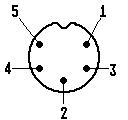

Previous
Next
TOC
Die Pinbelegung der Midi Out Buchse
1 THRU Transmit Data
Achtung: MIDI-Kabel kann man wirk-
2 Ground
lich unbedenklich im Betrieb stecken
3 THRU Loop Return
oder ziehen!
4 Out Transmit Data
5 Out Loop Return

Aber es gab hier schon eine Fehlinformation: Potentialtrennung sollte
zwar vorhanden sein, ist es bei den Ataris aber oft nicht, weil die
Abschirmung auf GND liegt. Stereo-Überspielkabel verbinden normaler-
weise die metallischen Ringe der Stecker mit der Kabel-Abschirmung
und damit miteinander - und schon gibt es keine Potentialtrennung
mehr.
MIDI - MUSICAL INSTRUMENT DIGITAL INTERFACE
MIDI ist ein akronym für Musical Instrument Digital Interface.
MIDI verbindet Synthesizer, Sequencer, Homecomputer, Rhythmusmachi-
nes, etc. über ein standardinterfaces miteinander, welches mit einer
Geschwindigkeit von 31.25 (+/- 1%) Kbaud arbeitet. Die Datenübertra-
gung erfolgt asynchron mit einem Startbit, 8 Datenbits und einem Stop
bit (das heißt, das insgesamt 10 Bits innerhalb einer Periode von
320 Microsekunden ein Serielles Byte sind).
Es können entweder der Sharp PC-900 oder der Hewlett-Packard 6N138
Optokoppler verwendet werden und die maximale Leitungslänge beträgt
15 Meter oder 55 Fuß.
International Midi Association
5316 West 57th Street
Los Angeles, CA 90056
(415) 321-MIDI
Kapitel Die Pinbelegung der Midi Out Buchse, Seite 1